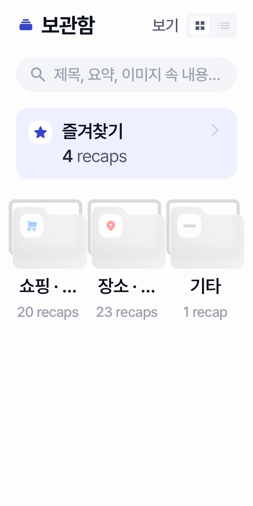
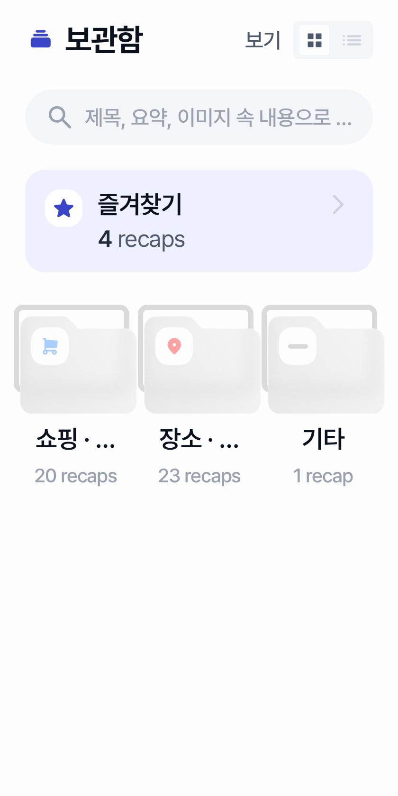

MAJOR CLIPPING collection-001 Category grid labels ellipsize under compact width / high fontScale
In Overview Grid mode, fixed 3-column category cells force single-line category titles such as '쇼핑 · 상품' and '장소 · 맛집' into ellipsis (e.g. '쇼핑 · ...', '장소 · ...'), so primary category identity becomes unreadable while the folder icons remain.
State Overview Grid (populated categories)
Test
com.chalkak.recap.feature.collection.CollectionScreenOverviewGridScreenshotComponents CollectionTypeGridItem, LazyVerticalGrid GridCells.Fixed(3), RecapHeading3 category label, collection_recap_count plural
Root cause file
feature/collection/src/main/java/com/chalkak/recap/feature/collection/CollectionScreen.ktProbable root cause Fixed 3-column grid cell width plus single-line ellipsis on scaled RecapHeading3/Caption2 text cannot fit multi-token category labels without allowing wrap, adaptive columns, or a denser typography/layout contract.
Fix layer SCREEN · Confidence HIGH · VM confirmation False
Evidence
- 320x640 @ font130/150: category titles truncated to '쇼핑 · ...' and '장소 · ...' while '기타' remains fully visible.
- 320x640 @ font100 and 360/412 at font100-150 keep full '쇼핑 · 상품' / '장소 · 맛집' / count strings.
- Source: CollectionTypeGridItem uses maxLines=1 + TextOverflow.Ellipsis for label and count under LazyVerticalGrid(columns = GridCells.Fixed(3)) with HorizontalPadding 20.dp and TypeGridSpacing 19.dp (~80.7dp cell width at 320dp).
Failing screenshots


All occurrence previews: 320x640-font130, 320x640-font150